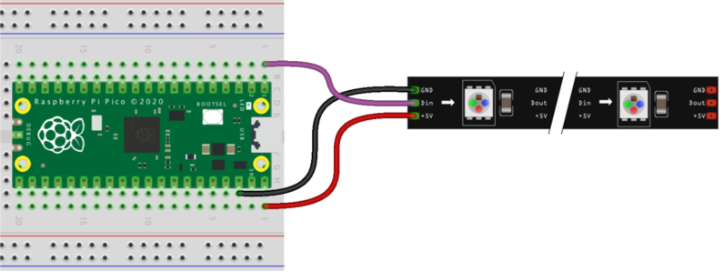
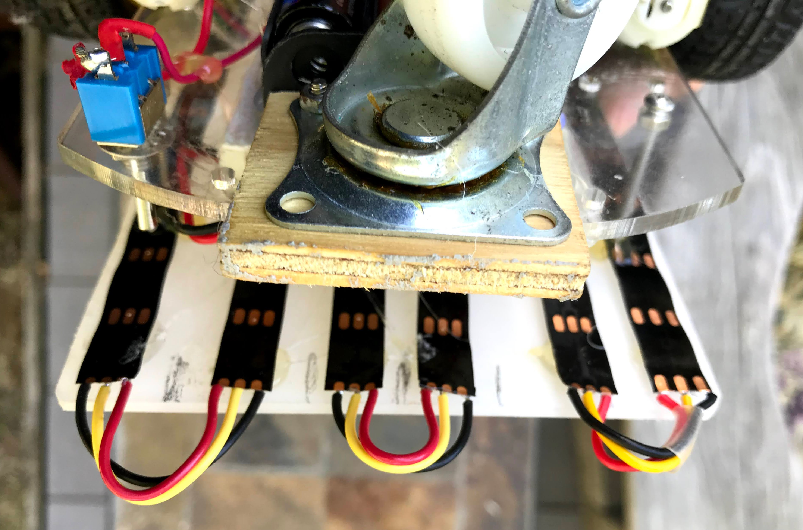
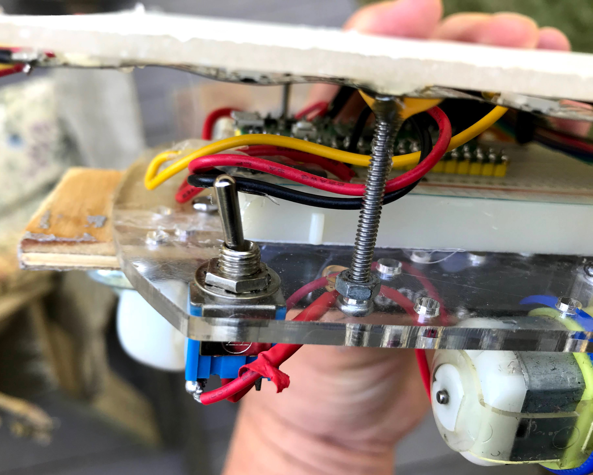
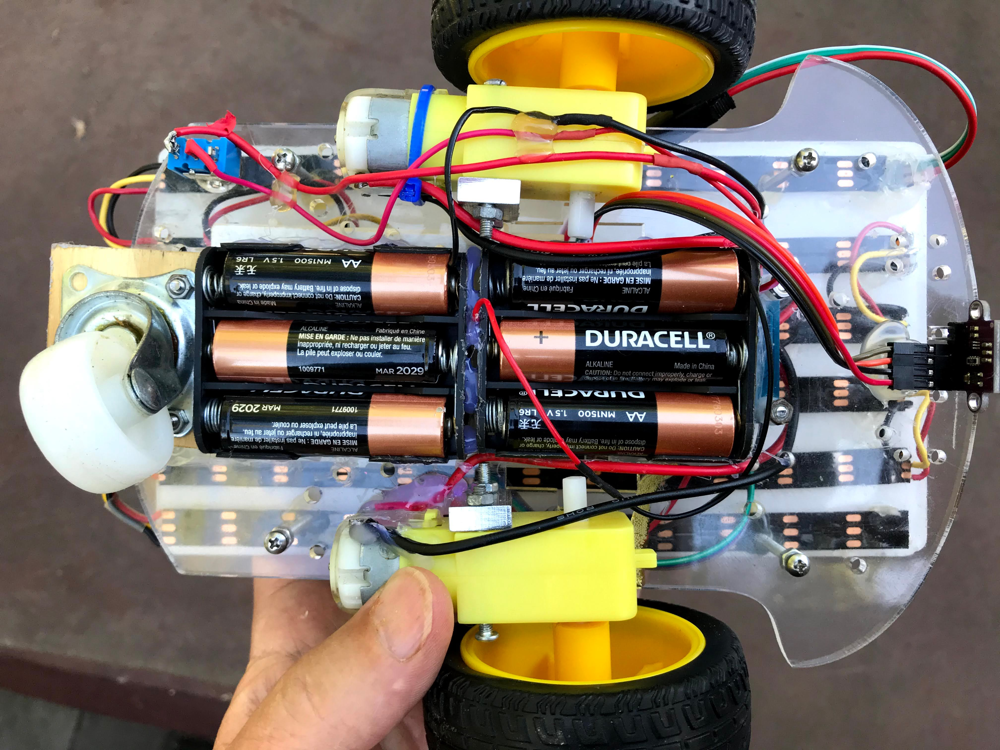
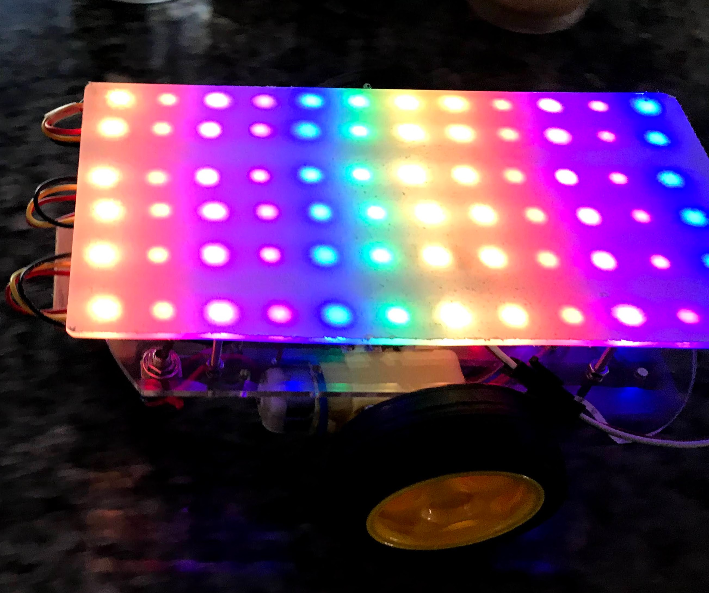

This robot takes our base robot and adds an LED strip arranged in a 12X6 pixel grid to display colors and patterns based on what the robot is doing or thinking about.
We use the same materials as our Base Robot but we add a low-cost addressable LED strips that are easy to hook up with just power, ground and data wires added to our breadboard. The LED is known as an addressable LED strip since you can individually program each LED. The standard is called the WS-2812B LED strip and is often called a NeoPixel LED strip (The Adafruit Term). We also used a Python library called a Neopixel micropython library, although the library is not created or maintained by Adafruit.

Of course, you can also add longer LED strips and program the patterns in interesting ways.
Part 1: Ordering The LED Strip
The LED strips come in a variety of lengths, density and packing. We use the 1 meter long strips that have 60 pixels/meter. These strips are easy to cut apart and solder. We like the black backgrounds but they also come with white. The LED strips come with three packaging options:
No waterproofing - these are fine for our indoor robots
Waterproofing with the strips coated in silicon rubber called IP65 waterproofing
Waterproofing with the strips encased in a flexible rubber sleeve
The waterproofing options tend to be a little more expensive but can also provide a bit more protection for the components on the strips. Waterproofing keeps moisture and dust out of the circuits, but does not mean that they can be submerged under water.
We can take a $3 strip of 60 LEDs and cut them up into six segments of 10 LEDs each for a cost of around 50 cents per strip. We solder stranded wire to the segments and then put 22 gauge solid wire to make them easy to put in the breadboards.
Connecting the LED Strips

Adding a Standoff

Upgrading to 9 Volt Power
Our base robot only needed power for the motors. This robot has 72 RGB LEDs so it might draw more power. So we upgraded the 6 volt battery pack with 4 AA batteries to two packs of 3 batteries for a total of 9 volts. This allows the robot to continue to run even when the batteries are partially drained. The battery packs must be wired in series to deliver the full 9 volts to the input of the motor controller where it powers the motors and also runs though a voltage regulator to power the reset of the robot.

72 Pixel Configuration
Here is the top view of the LEDs shining through the clear plexiglass.

You can see the individual LEDs in this configuration. By adding a small space between the plexiglass and a diffusion layer you can get a much more uniform color distribution over the top surface of the robot.
Part 2: Making The Connections
The LED strips use 5 volts of power and have a GND and a data connector. To make the connections we connect the center pin to Pin 0 (upper left corner of the Pico), the GND to the ground rail and the 5 volt to the 5 volt power rail.
Part 3: Adding the Neopixel Library
Part 4: Testing Your Code
In our first test, we will just make the first pixel on the LED strip blink bright red.
1
2
3
4
5
6
7
8
9
10
11
12
13
14
15
importmachine,neopixel,time# Set the pin number and number of pixelsLED_PIN=machine.Pin(4)NUMBER_PIXELS=12np=neopixel.NeoPixel(LED_PIN,NUMBER_PIXELS)# blink the first pixel redwhileTrue:np[0]=(255,0,0)np.write()time.sleep(1)np[0]=(0,0,0)np.write()time.sleep(1)
Functions For Drawing on Matrix
The numbering of the pixels is a bit odd. The first 12 are 0 to 11, but the second 12 pixels are in reverse order, so the second row counts from 23 down to 13. Here are some functions that demonstrate this:
importtimefromneopixelimportNeopixelnumpix=72strip=Neopixel(numpix,0,0,"GRB")red=(255,0,0)orange=(255,150,0)yellow=(255,255,0)green=(0,255,0)blue=(0,0,255)indigo=(75,0,130)violet=(138,43,226)colors=(red,orange,yellow,green,blue,indigo,violet)strip.brightness(255)defcolor_wipe():forcolorincolors:foriinrange(numpix):strip.set_pixel(i,color)strip.show()time.sleep(0.01)defcolor_wipe_2():forcolorincolors:foriinrange(12):strip.set_pixel(i,color)strip.set_pixel(i+12,color)strip.set_pixel(i+24,color)strip.set_pixel(i+36,color)strip.set_pixel(i+48,color)strip.set_pixel(i+60,color)strip.show()time.sleep(0.01)defcolor_wipe_3():forcolorincolors:foriinrange(12):strip.set_pixel(i,color)strip.set_pixel(23-i,color)strip.set_pixel(i+24,color)strip.set_pixel(47-i,color)strip.set_pixel(48+i,color)strip.set_pixel(71-i,color)strip.show()time.sleep(0.3)# offset is the color to start (0 to 6)# dir is 1 for forward and -1 for reversedefcolor_wipe_4(offset,dir):foriinrange(12):ifdir==1:this_color=colors[((i-offset)%7)]else:this_color=colors[((i+offset)%7)]strip.set_pixel(i,this_color)strip.set_pixel(23-i,this_color)strip.set_pixel(i+24,this_color)strip.set_pixel(47-i,this_color)strip.set_pixel(48+i,this_color)strip.set_pixel(71-i,this_color)strip.show()# time.sleep(0.01)whileTrue:forcounterinrange(100):color_wipe_4(counter%7,1)forcounterinrange(100):color_wipe_4(counter%7,-1)
Full Source Code
We now combine the motor controls, the distance sensor and the LED functions so that a moving rainbow pattern moves from to back as the robot moves forward. If the robot encounters an obstacle, the robot will backup and change the direction of the rainbow. After it backs up a bit it will turn and move forward again.
frommachineimportPin,PWMfromtimeimportsleepfrommachineimportPinfrommachineimportI2CimportVL53L0XfromneopixelimportNeopixel# Motor Code# lower right pins with USB on topRIGHT_FORWARD_PIN=19RIGHT_REVERSE_PIN=18LEFT_FORWARD_PIN=20LEFT_REVERSE_PIN=21right_forward=PWM(Pin(RIGHT_FORWARD_PIN))right_reverse=PWM(Pin(RIGHT_REVERSE_PIN))left_forward=PWM(Pin(LEFT_FORWARD_PIN))left_reverse=PWM(Pin(LEFT_REVERSE_PIN))# Sensor Codesda=machine.Pin(16)scl=machine.Pin(17)i2c=machine.I2C(0,sda=sda,scl=scl)# Create a VL53L0X objecttof=VL53L0X.VL53L0X(i2c)tof.start()# startup the sensor# used to blink the onboard LEDled_onboard=machine.Pin(25,machine.Pin.OUT)# LED Codenumpix=72strip=Neopixel(numpix,0,0,"GRB")# we turn the brightness way down to not oversaturate the brightness in the videostrip.brightness(20)# driving parametersPOWER_LEVEL=30000# use a value from 20000 to 65025TURN_THRESHOLD=400# 25 cmTURN_TIME=.25# seconds of turningBACKUP_TIME=.75# seconds of backing up if obstacle detectedred=(255,0,0)orange=(255,165,0)yellow=(255,255,0)green=(0,255,0)blue=(0,0,255)indigo=(75,0,130)violet=(138,43,226)colors=(red,orange,yellow,green,blue,indigo,violet)defturn_motor_on(pwm):pwm.duty_u16(POWER_LEVEL)defturn_motor_off(pwm):pwm.duty_u16(0)defforward():turn_motor_on(right_forward)turn_motor_on(left_forward)turn_motor_off(right_reverse)turn_motor_off(left_reverse)#for i in range(numpix):# strip.set_pixel(i, green)#strip.show()defreverse():turn_motor_on(right_reverse)turn_motor_on(left_reverse)turn_motor_off(right_forward)turn_motor_off(left_forward)#for i in range(numpix):# strip.set_pixel(i, red)#strip.show()defturn_right():turn_motor_on(right_forward)turn_motor_on(left_reverse)turn_motor_off(right_reverse)turn_motor_off(left_forward)#for i in range(numpix):# strip.set_pixel(i, blue)#strip.show()defturn_left():turn_motor_on(right_reverse)turn_motor_on(left_forward)turn_motor_off(right_forward)turn_motor_off(left_reverse)#for i in range(numpix):# strip.set_pixel(i, yellow)#strip.show()defstop():turn_motor_off(right_forward)turn_motor_off(right_reverse)turn_motor_off(left_forward)turn_motor_off(left_reverse)foriinrange(numpix):strip.set_pixel(i,violet)strip.show()defread_sensor_avg():total=0foriinrange(10):total=total+tof.read()sleep(.01)returnint(total/10)# offset is the color to start (0 to 6)# dir is 1 for forward and -1 for reversedefcolor_wipe_4(offset,dir):foriinrange(12):ifdir==1:this_color=colors[((i-offset)%7)]else:this_color=colors[((i+offset)%7)]strip.set_pixel(i,this_color)strip.set_pixel(23-i,this_color)strip.set_pixel(i+24,this_color)strip.set_pixel(47-i,this_color)strip.set_pixel(48+i,this_color)strip.set_pixel(71-i,this_color)strip.show()# time.sleep(0.01)counter=0whileTrue:dist=read_sensor_avg()ifdist<TURN_THRESHOLD:print('object detected')reverse()color_wipe_4(counter%7,-1)sleep(.1)counter+=1color_wipe_4(counter%7,-1)sleep(.1)counter+=1color_wipe_4(counter%7,-1)sleep(.1)counter+=1color_wipe_4(counter%7,-1)sleep(.1)counter+=1color_wipe_4(counter%7,-1)sleep(.1)counter+=1turn_right()color_wipe_4(counter%7,-1)sleep(.1)counter+=1color_wipe_4(counter%7,-1)sleep(.1)counter+=1color_wipe_4(counter%7,-1)sleep(.1)counter+=1else:forward()color_wipe_4(counter%7,1)counter+=1